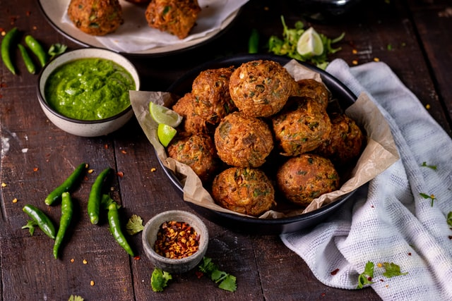

MEAL ONE - MEATBALLS, BEAN SLAW AND FLATBREADS

Ingredients
- 195g Roasted Garlic & Extra-Virgin Olive Oil Pizza Bread
- 185g Ready Sliced Runner Beans
- 300g 12 Venison Meatballs
- 1 tbsp mayonnaise
- 4 tbsp Greek yogurt
- Handful fresh coriander, roughly chopped
- 1 garlic clove, crushed
- Juice 1/2 lemon, plus wedges to serve
- 2 tbsp olive oil
- Smoked paprika to sprinkle
Instructions
- Heat the oven and cook the flatbread according to the pack instructions. Meanwhile, combine the runner beans, mayo, yogurt, coriander, garlic and lemon juice in a mixing bowl. Season, then set aside.
- Heat the olive oil in a large frying pan and, when hot, add the meatballs. Sprinkle generously with smoked paprika, then cook, pressing down gently and turning occasionally, for 5 minutes or until cooked through.
- Divide the meatballs and slaw between 2 serving plates and sprinkle with a little more smoked paprika, if you like. Cut the flatbread into halves and add to the plates, then serve straightaway with lemon wedges for squeezing.
MEAL TWO - CHILLI TOMATO AND PRAWN PASTA

Ingredients
- 350g spaghetti
- 7 large vine tomatoes, chopped
- 2 tbsp olive oil
- 2 garlic cloves, finely sliced
- 1 tsp chilli paste
- 1 tsp red wine vinegar
- 300g raw king prawns
- Half a small bunch of fresh parsley, chopped
Instructions
- Cook the pasta according to pack instructions. Drain, then return to the pan with a good splash of the cooking water.
- Meanwhile, heat a dry pan over a high heat. Add the chopped tomatoes, then cover and cook for 10 minutes. Remove the pan lid and add the oil, garlic, chilli paste and vinegar.
Season with salt, pepper and a pinch of sugar, then simmer for 5 minutes or until the sauce thickens.
- Remove the pan lid, then add the prawns to the tomato sauce and cook until they are just pink. Add the cooked pasta and chopped parsley to the pan and toss to combine, then serve.

lasanga